NetAlertX — Supervision et Découverte Réseau
Veille Open Source · Docker · Auto-hébergement · Surveillance d'actifs réseau
J'ai réalisé ce lab pour tester NetAlertX, un outil open source de supervision et de découverte réseau qui scanne un réseau local, dresse l'inventaire des appareils connectés et alerte en cas de nouveauté ou d'absence. Déployé sur une machine Ubuntu via Docker, il fonctionne ici sur mon réseau Wi-Fi personnel, mais son intérêt dépasse largement le cadre domestique : en entreprise, ce type d'outil sert de base à la visibilité des actifs réseau (asset discovery), un pilier souvent négligé de la sécurité défensive.
Environnement
Hôte Ubuntu Server (ubuntunax)
Déploiement Docker + Docker Compose
Image jokobsk/netalertx:latest
Réseau scanné 192.168.1.0/24 (Wi-Fi)
Interface http://192.168.1.27:20211
Étape 1 — Installation de Docker
NetAlertX se déploie le plus simplement via un conteneur Docker. La première étape consiste donc à installer Docker Engine et Docker Compose sur la machine Ubuntu, en suivant la procédure officielle basée sur le dépôt APT de Docker.
Installation des paquets prérequis pour ajouter un dépôt APT sécurisé par clé GPG :
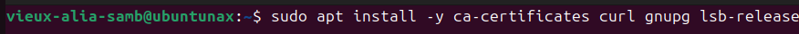
Création du dossier de destination pour les clés GPG des dépôts tiers :
Téléchargement et enregistrement de la clé GPG officielle de Docker :
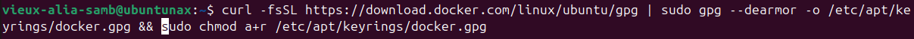
Ajout du dépôt Docker officiel à la liste des sources APT, signé par la clé précédemment installée :
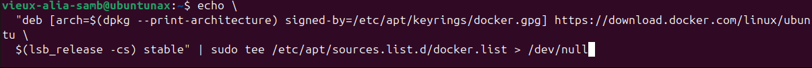
/etc/apt/sources.list.d/docker.list" />Mise à jour des paquets puis installation de Docker Engine, du CLI, de containerd et des plugins Buildx et Compose :
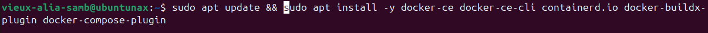
L'utilisateur courant est ajouté au groupe docker pour exécuter les commandes sans sudo :
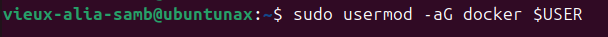
Vérification finale des versions installées :
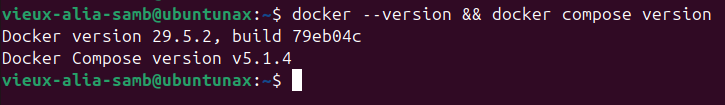
Étape 2 — Déploiement de NetAlertX
Un dossier de travail est créé pour isoler la configuration du conteneur :
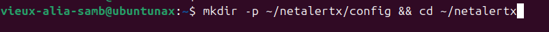
Un fichier docker-compose.yml est rédigé pour définir le service :
Le fichier utilise l'image officielle jokobsk/netalertx, avec un réseau en mode host (indispensable pour que l'outil puisse effectuer des scans ARP et ICMP directement sur l'interface physique) et les capacités Linux NET_ADMIN, NET_RAW et NET_BIND_SERVICE nécessaires à ces scans bas niveau. Le fuseau horaire est fixé à Africa/Dakar et le port web à 20211.
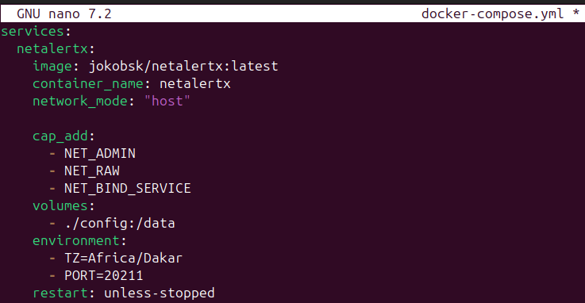
Le conteneur est lancé en arrière-plan :
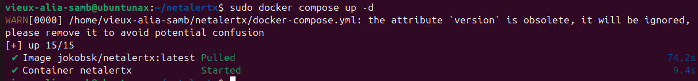
docker ps confirme que le conteneur tourne et passe à l'état healthy :
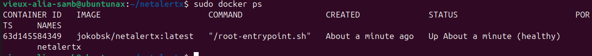
Un dernier ip a permet de relever l'adresse de l'hôte sur le réseau Wi-Fi (192.168.1.27), qui servira à accéder à l'interface web de NetAlertX.
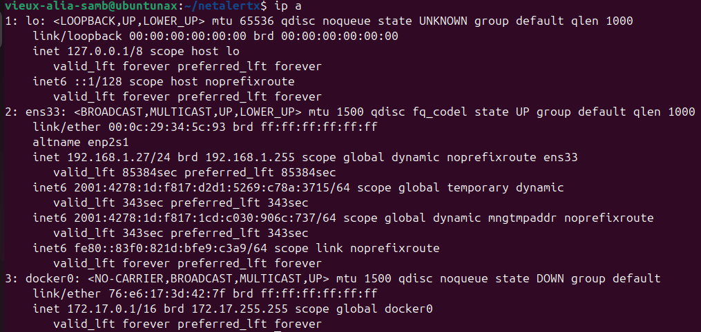
Étape 3 — Premier Accès et Sécurisation
L'interface web est accessible à l'adresse http://192.168.1.27:20211. Le tableau de bord affiche d'emblée un résumé de l'état du réseau : nombre d'appareils connus, connectés, nouveaux, en panne, ainsi qu'un graphique de présence sur la période récente.
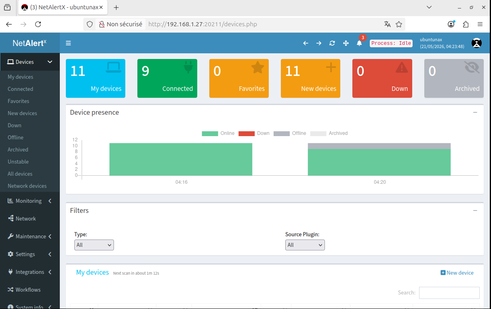
Point important à souligner : par défaut, NetAlertX ne propose pas de page de connexion. Ce choix des développeurs part du principe que l'outil est déployé sur un réseau local de confiance et que l'accès physique ou réseau à l'interface est déjà filtré en amont. Dans une optique de durcissement, il est cependant recommandé d'activer l'authentification via le plugin Set password, qui ajoute un écran de connexion protégé par mot de passe.
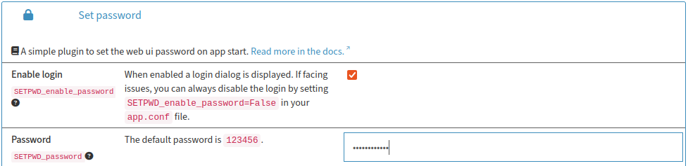
L'interface est également passée en français via le plugin UI Settings :
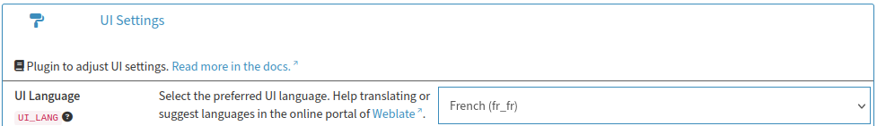
Une fois l'authentification activée, tout accès à l'interface exige désormais la saisie du mot de passe :
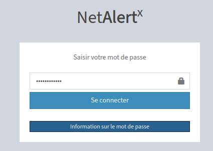
Étape 4 — Configuration des Scans et Découverte des Appareils
Le sous-réseau à surveiller est déclaré dans les paramètres, avec l'interface réseau associée. NetAlertX combine plusieurs techniques de scan (ARP, NMAP, Nslookup, DIG) sur la plage définie pour identifier les appareils présents.
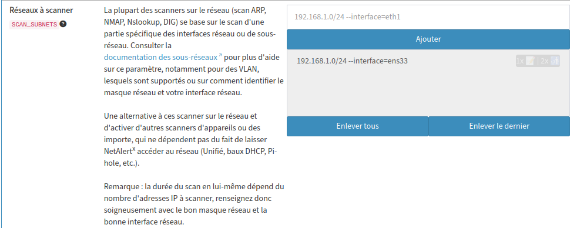
La page Mes appareils liste ensuite tous les équipements détectés sur le réseau Wi-Fi, avec leur type détecté, leur dernière adresse IP, leur état et le plugin ayant permis la découverte (ici principalement ARPSCAN). On y retrouve smartphones, télévision connectée et postes de travail, dont la machine hôte elle-même.
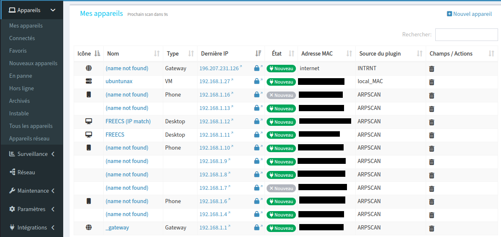
En cliquant sur un appareil, une fiche détaillée s'ouvre : historique des sessions, temps de présence sur la période, informations réseau (adresse MAC, dernière IP, nœud parent), et configuration des alertes propres à cet appareil.
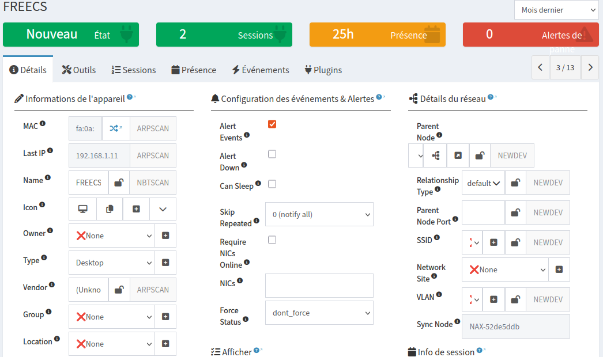
La vue Réseau propose enfin une représentation topologique visuelle : Internet à gauche, le routeur Wi-Fi au centre, et l'ensemble des appareils qui s'y rattachent en étoile, avec leur icône de type (téléphone, PC, TV) et leur état de connexion en temps réel.
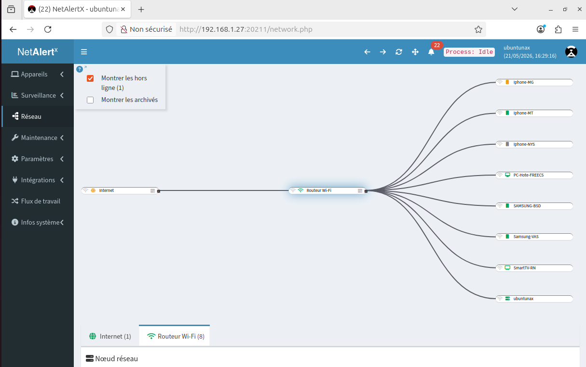
Étape 5 — Notifications et Passerelles de Publication
NetAlertX peut notifier automatiquement en cas d'événement (nouvel appareil, appareil hors ligne, etc.) via différentes passerelles de publication. Deux ont été testées ici : un webhook générique et l'envoi d'e-mail via SMTP. L'outil prend également en charge nativement des canaux comme Telegram, Discord, Slack, ntfy, Pushover, MQTT ou Apprise, non testés dans ce lab mais disponibles pour une intégration plus poussée avec un SOC ou un outil de ticketing.
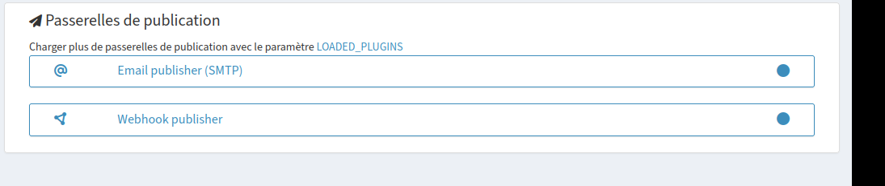
Le Webhook publisher est configuré pour se déclencher à chaque notification (on_notification) et envoyer une requête GET vers une URL cible, ici un webhook ntfy.sh permettant de recevoir l'alerte directement sur mobile ou desktop sans dépendre d'un service tiers propriétaire.
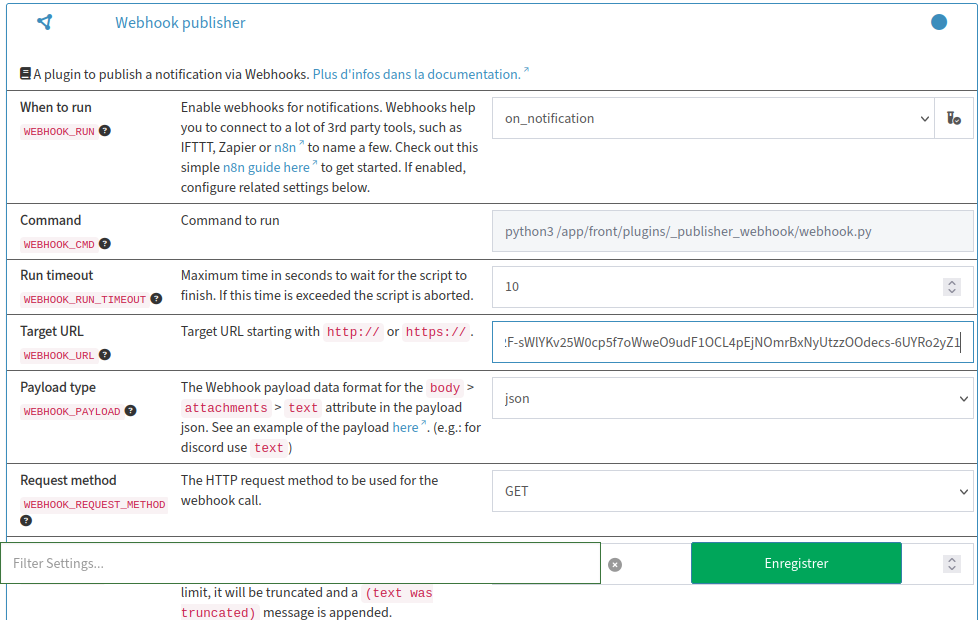
Le Email publisher (SMTP) est configuré avec un compte Gmail comme relais : serveur smtp.gmail.com, port 587, authentification par identifiants, adresse d'envoi et de réception, et objet personnalisé pour les notifications.
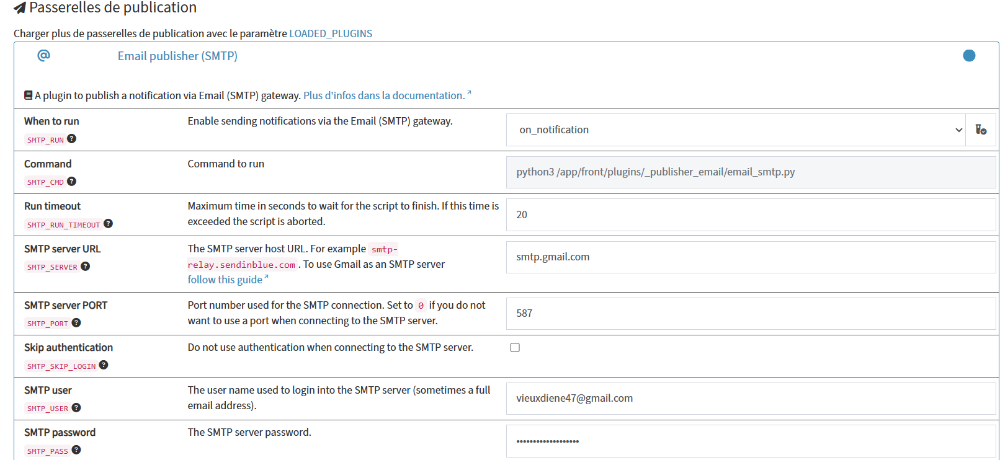
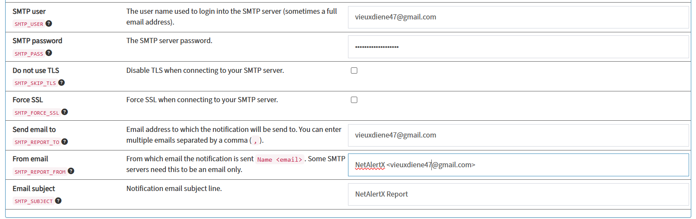
Résultat concret : dès qu'un appareil connu se reconnecte au réseau (ici un iPhone), un e-mail de notification est reçu automatiquement, avec le nom de l'appareil, son adresse MAC, son fabricant identifié (Apple, Inc.), son adresse IP et l'horodatage exact de la connexion.
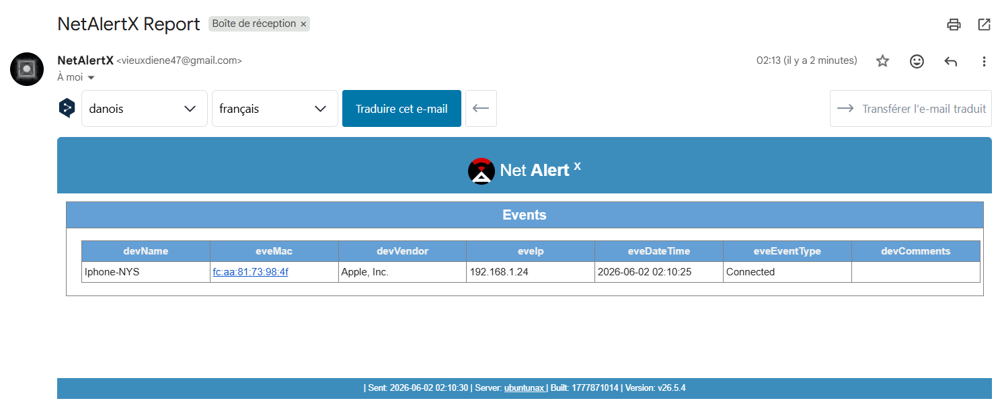
Au-delà du Wi-Fi Personnel : Intérêt en Environnement Professionnel
Ce lab a été mené sur un réseau Wi-Fi domestique, mais la même logique s'applique directement à un contexte d'entreprise, où la visibilité complète des actifs réseau (asset discovery) constitue un prérequis à toute stratégie de sécurité défensive. On ne peut pas protéger ce que l'on ne voit pas.
NetAlertX ne se limite pas à la détection de postes clients. En s'appuyant sur ses différents plugins de scan, il peut aussi identifier et suivre :
- Routeurs et passerelles, détectés comme point d'entrée vers Internet ou comme nœuds parents dans la topologie réseau.
- Switches et points d'accès Wi-Fi compatibles SNMP, via le plugin SNMP qui interroge directement les équipements réseau pour enrichir l'inventaire.
- Appareils IoT et objets connectés (caméras, imprimantes réseau, capteurs), souvent invisibles dans les outils d'inventaire classiques et pourtant fréquemment ciblés faute de mise à jour.
- Intégrations tierces comme Unifi Controller, pfSense, OPNsense, Pi-hole (via ses baux DHCP) ou Omada, qui permettent de récupérer des informations d'appareils sans multiplier les scans actifs sur le réseau.
En environnement professionnel, ce type d'outil vient compléter les solutions de NAC (Network Access Control) ou de SIEM en apportant une couche légère de découverte continue : détection de matériel non autorisé (shadow IT), alerte immédiate sur l'apparition d'un nouvel appareil sur un segment sensible, ou simple maintien à jour de l'inventaire réseau sans effort manuel. Couplé aux webhooks et à l'envoi d'e-mail testés dans ce lab, il peut facilement s'intégrer à un pipeline d'alerting existant plutôt que de rester une console isolée.
Bilan : ce lab m'a permis de manipuler un outil de veille réseau complet de bout en bout, du déploiement Docker jusqu'à la configuration des alertes. Il illustre aussi une bonne pratique de durcissement souvent oubliée : vérifier qu'un outil auto-hébergé expose bien une authentification avant de le laisser tourner sur le réseau, même local.